Administrator operations, accountability and monitoring
Based on the inspected repository.
Genuine isolated training screenshots.
Production deployment remains unverified.
| Item | Value |
|---|---|
| Version | 1.0 |
| Prepared | 12 October 2026 · Asia/Manila |
| Audience | Active Admin accounts |
| Basis | Current local repository, source and isolated browser review |
| Scope | 14 primary modules; authentication and account access are cross-cutting functions |
| Companion | SiteTrace_Engineer_Architect_User_Manual; SiteTrace_System_Module_and_Role_Review.md |
Naming: these documents use the requested SiteTrace title. The inspected application displays MCPA (Material & Construction Property Allocation), Construction Asset Management and Accountability System, and BuildRight Corp. Follow the on-screen MCPA labels when using the application. No application branding was changed.
Verification scope: instructions describe the current repository implementation. Genuine interface screenshots were captured from the unmodified application using isolated local PGlite test records. Authentication and account-service capability responses were modeled locally. They are training illustrations, not production screenshots or proof of deployed services.
The capture browser blocked external HTTPS and permitted business reads only after fixture setup. No live login, migration, invitation, stock change, approval, handover, receipt, return, role change, or notification-read update was performed. The live REQ-00001 test was not accessed. Its unchanged state was not independently compared because production was not contacted.
Operational availability: use the procedures only in an authorized company workspace whose required Supabase database functions, policies and services are installed. Source-confirmed write procedures were not executed in the capture browser. Supabase deployment, email delivery, private file retrieval, optical QR scanning and the monitoring scheduler remain unverified in production.
Screenshot conventions: all figure captions identify the local training environment. Fixture names, example.test addresses, asset references beginning DOC-, and transaction numbers in the 007xx range are synthetic. Password fields are empty or absent. No authentication tokens or receiving QR secrets are embedded in the manuals. Figures are numbered separately in each manual.
SiteTrace/MCPA tracks construction equipment, accountable holders, projects, requests, physical handovers, returns, damage, loss and consumable stock. Admin registers and maintains inventory metadata, assigns project accountability, reviews equipment requests, releases approved stock, resolves repair and missing cases, manages company access and reviews purchasing and monitoring records.
The system is a plain HTML, CSS and JavaScript application backed by Supabase Auth, PostgreSQL database functions, row-level security, private Storage and a Deno Edge Function for account creation. Daily operation should use the deployed company address and an active Admin identity.
Admin coordinates approval and oversight. The named Engineer or Architect inspects and confirms receipt; Admin cannot receive transfers, create routine field requests, submit returns, withdraw requests, cancel reservations/handovers, refuse damage or reopen field handovers through the current action map. Resolve physical custody through the responsible field account instead of editing metadata to imitate a movement.
| Role | Implemented responsibility |
|---|---|
| Admin | Company oversight, inventory metadata, Projects writes, request approval/rejection/release, repair completion/recovery, materials, purchase ledger, reports and access management. |
| Engineer / Architect | Same permissions: request available tools for assigned projects; transfer, receive, return and report issues within ownership constraints. |
| Secretary | Material Requests, Purchases and Settings; no equipment monitoring. |
| Tool Handler | Company equipment/project monitoring and dispatch of eligible available stock without a holder; no Admin approvals or field receipt/return actions. |
Source evidence: index.html; js/auth.js; js/permissions.js; supabase/functions/manage-accounts/handler.mjs.
Open the pages and actions authorized for your company identity.
An issued company account, a confirmed invitation if applicable, and an Active company profile.
The application opens the role’s home module. Admin, Engineer, Architect and Tool Handler open Dashboard; Secretary opens Material Requests.
An Auth login without an authorized active profile is refused. Incorrect email or password., an inactive-account message, or a profile-verification failure requires correction or administrator assistance. There is no public account registration.
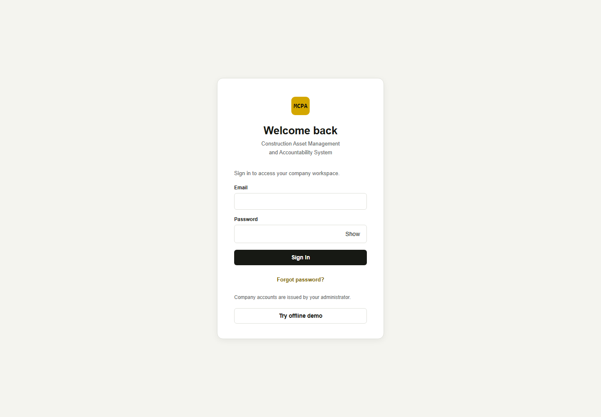
Set a password for an issued account or recover access.
A valid invitation or password-reset email, configured Supabase Auth redirects and working email delivery.
The password is saved by Supabase Auth and the user signs in again.
An invalid, expired or unavailable invitation session needs a fresh invitation or password reset. This documentation session did not send or receive email.
Dashboard opens Movement overview. Company equipment totals count quantities across records, rather than just the number of rows. The page includes Total Equipment, Available, Deployed, Active Projects, Equipment status, Equipment by project / site, Asset movement, Current inventory, Next actions, Recent asset activity, Active Projects and Custody overview.
Needs Review links to Tool requests, Transfers in progress, Repair cases and Missing cases. Select a KPI or Open to go to the corresponding module. The current inventory preview shows at most six records; View full inventory opens Equipment Tracking. Asset movement charts count saved events during the last seven days in Manila time.
Status and availability are separate. The current availability helper shows Deployed for equipment at a project with In Use status, Available when there is no project or the normalized state is In Office, and Unavailable otherwise. An Available status at a project can therefore display Unavailable. Request eligibility separately requires available stock with no holder, positive quantity and no approved reservation or pending/refused transfer. Do not use a dashboard count or availability caption alone as permission to issue equipment. Movement summary totals can also include Withdrawn/Canceled records in the open count; use each saved status badge to decide what remains actionable.
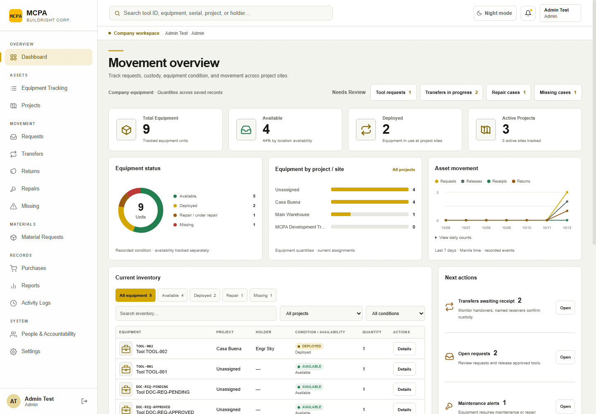
| Sidebar section | Menu labels and purpose |
|---|---|
| Overview | Dashboard — monitoring and action queues. |
| Assets | Equipment Tracking — registered tools; Projects — project metadata and inventory. |
| Movement | Requests; Transfers; Returns; Repairs; Missing. |
| Materials | Material Requests — opens the page headed Consumables. |
| Records | Purchases; Reports — opens Inventory monitoring; Activity Logs. |
| System | People & Accountability; Settings — opens My account. |
Use the sidebar to change modules. On narrow screens, use the navigation menu button to open the drawer and select a module. Top search opens Equipment Tracking with your query applied; use View or Details on a matching row. The bell opens Notifications for roles authorized for Activity Logs. The Account menu contains My Account, Change theme and Log Out.
Confirm your identity, select a display preference and close your session.
Any authorized role; offline demo uses Exit demo.
Display mode changes immediately. Log Out clears the local application workspace and asks Supabase to end the local session.
Sign out could not be confirmed. requires Retry sign out before leaving a shared device. Settings does not provide a profile editor, email editor, role switcher or in-session password-change form.
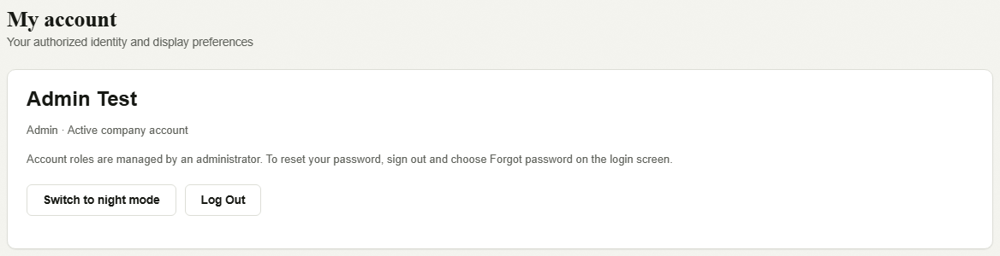
The Admin table shows Asset ID, Item, Category, Brand, Location, Status, Condition, Acquired and Actions. Use search for ID, item, brand, serial, project or holder; combine Project, Category and Status filters; use Prev, numbered pages and Next. View opens Tool Information. Edit opens the metadata form. + Add Item registers an item; Export opens a printable filtered receipt.
Equipment pictures support JPEG, PNG and WebP up to 5 MB, using configured private Storage and authorized image reads. Asset IDs are generated during save. The profile displays an equipment tag QR through an external QR service and offers printing. The Admin profile’s Movement History currently shows a registration entry only; use Activity Logs or the movement modules for actual saved transactions.
Row selection currently offers Review repairs, Review transfers and Cancel Selection after JavaScript initialization. These navigate to the review modules. They do not bulk-change status or location. Legacy HTML labels and old bulk modal functions must not be treated as operational reassignment tools.
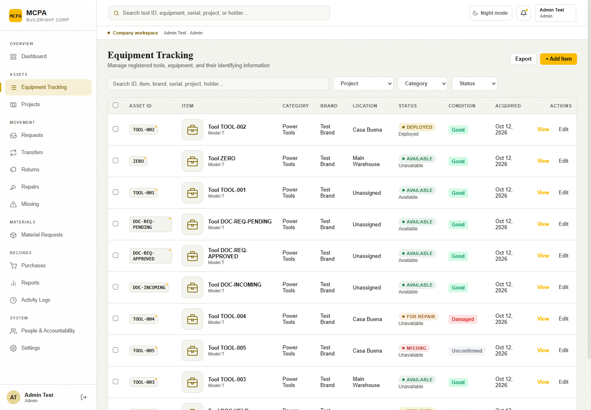
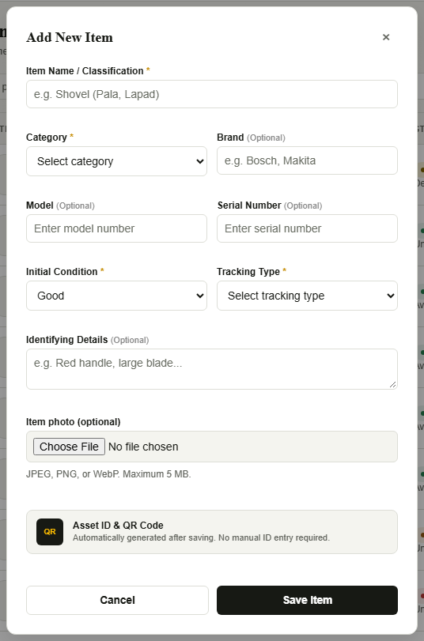
Source evidence: 1-admin/modules/masterlist/masterlist.js: initMasterlist, showToolProfile, setupMasterlistListeners, printQRTag, exportMasterlist; js/equipment-photos.js; migration 202610100003_feature_storage.sql.
Projects stores project name, location, one accountable Engineer/Architect profile, free-text phase, project status, completion percentage and last inventory-check date. One person can be assigned to multiple projects; a project has one accountable person. There is no multi-member assignment table or separate project membership editor.
Use Scope (My projects or All projects), Search projects and Include archived projects. Open a project card to see Project Inventory, accountability, Last Inventory Check and Last Movement. Review Assigned Tools includes zero-quantity records; the operational Project Inventory hides them. Project History is a metadata audit; View movement history → opens movement records. Assignments are read-only in these inventory views.
Admin can Add Project, Edit Project, Archive Project and Restore Project. Archiving preserves inventory assignments and history; it does not move equipment, clear holders or complete returns. Project History and Engineer/Architect Projects require the project_history dependency. Existing deployment notes record a missing-history issue; this task did not verify its live resolution.
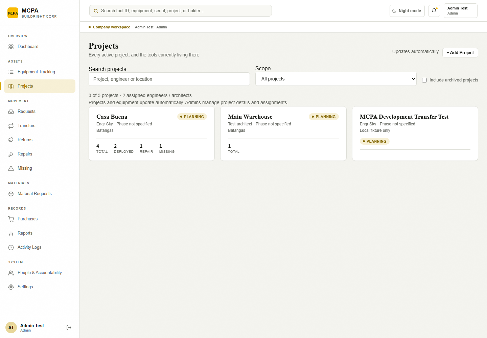
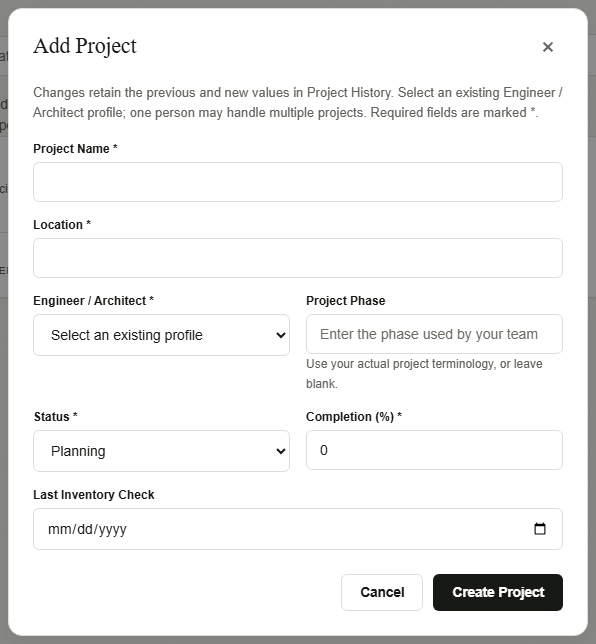
Source evidence: 1-admin/modules/sites/sites.js; supabase/migrations/202610100001_engineer_portal.sql; 202610100002_project_history.sql.
Requests is the equipment approval queue. Admin reviews Pending review records, uses Approve request or Reject request with a reason, then Release tools & create transfer for Approved records. Approval reserves all selected whole asset records. Release creates the linked transfer and code; it does not assign custody to the receiver. Reservations are part of Requests and Transfers, with no separate Reservations menu.
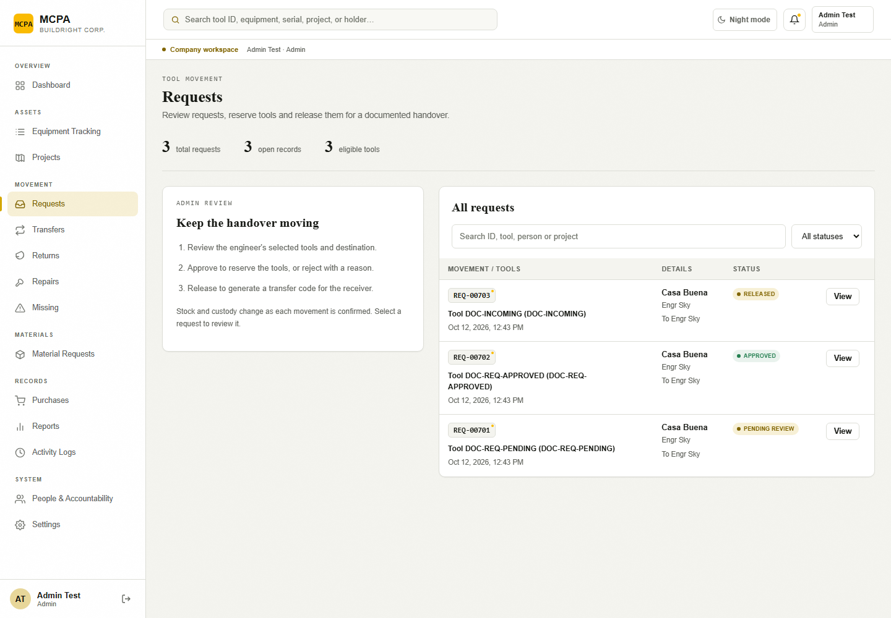
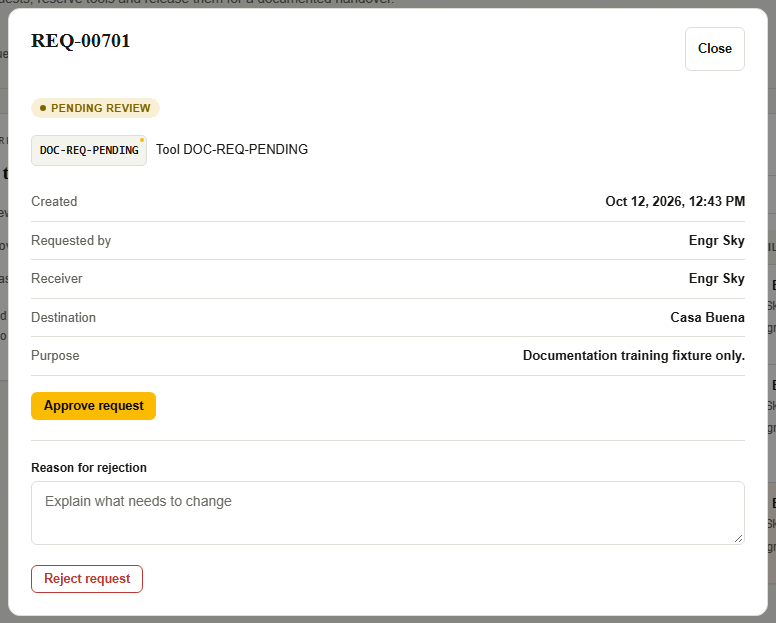
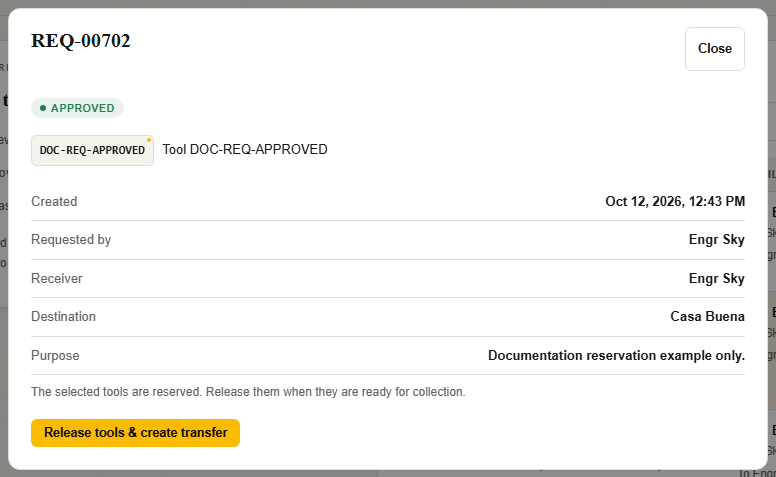
Admin has History in Transfers. Search movement records, filter by status and use View to inspect sender, receiver, destination, transfer reference and saved inspections. Admin can copy the handover code from transfer details. The receiving field account performs testing, notes damage/missing items and confirms receipt. Your receiving QR, Send Transfer and Receive Transfer are field-role interfaces; they are not Admin receipt actions.
A refusal is available only to eligible named field receivers. Refusing any damaged item holds the entire transfer, including the other tools, with existing custody and reservations. Admin monitors the refusal and contacts the accountable sender/requester. Cancellation or reopening is not an Admin action.
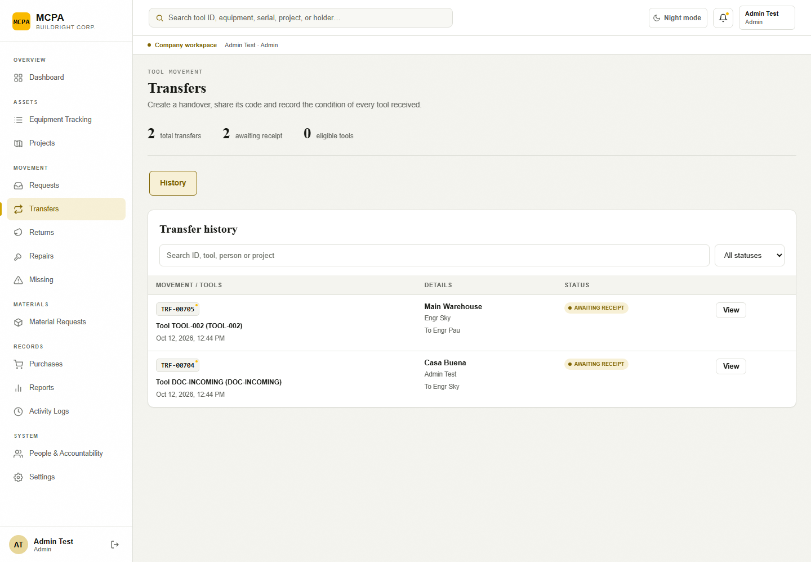
Returns lists the recorded return, returner, destination, notes and per-tool conditions. Field users save returns directly. There is no scheduling, separate handover QR, pending-return approval or Admin Confirm return action. Good returns clear the holder and set Available status; damaged returns open repairs and retain the holder until the appropriate resolution; missing returns retain existing custody/location and open a missing case.
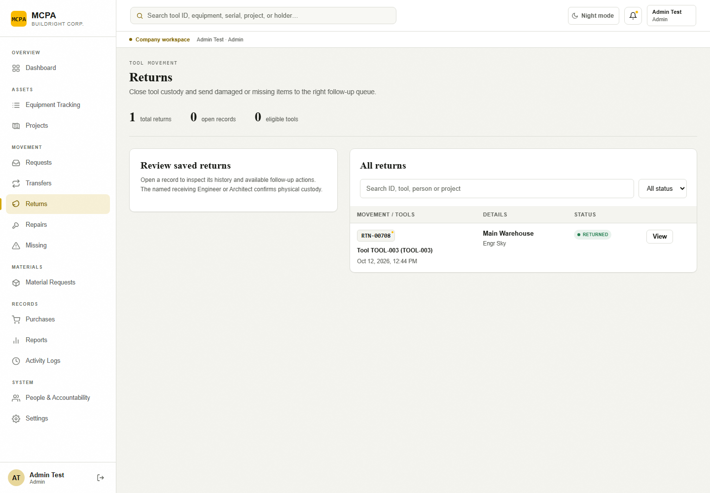
Repairs lists Reported, Under repair and Completed cases. Admin starts a Reported repair and completes an Under repair case with destination and completion notes. Missing lists Missing and Recovered cases. Admin records recovery with condition and location; damaged recovery opens a repair case. Reports from receipt and return inspection appear here as well as reports submitted by field users.
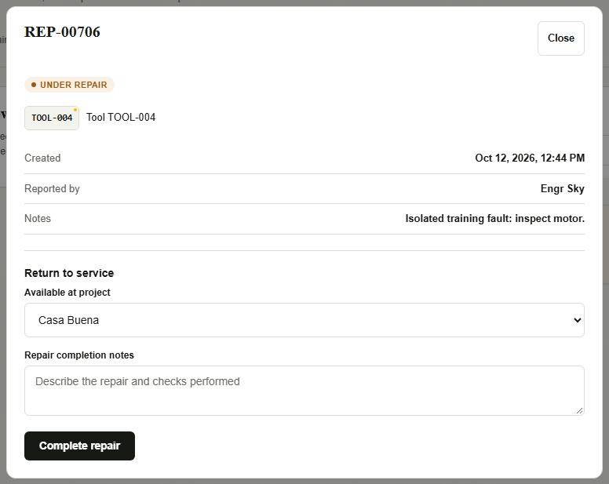
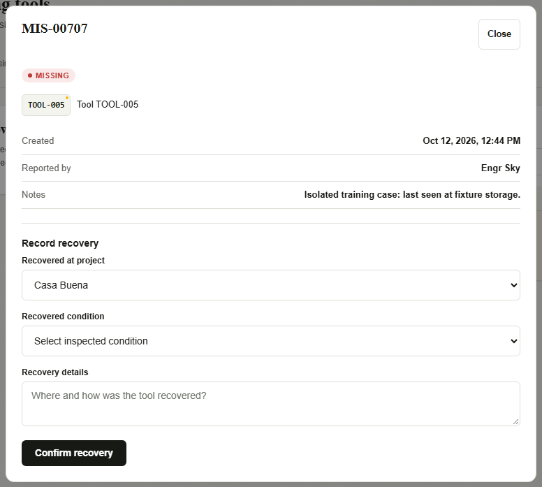
Source evidence: js/movement-ui.js: createForm, renderDetail, submit; js/movement-cloud.js; 1-admin/modules/movements/setup.sql; supabase/migrations/202610060002_recipient_identity.sql and 202610100004_movement_cancellation.sql.
The sidebar label Material Requests opens Consumables. This module manages bulk material stock, minimum levels, purchase alerts and consumable Purchase Requests. Admin and Secretary have access. Equipment requests use the separate Requests module. Consumable requests have no implemented Admin approval/rejection stage: creation, partial/full receipt and cancellation are the supported stages.
Stock levels show Out of Stock, Low Stock or OK. Use Search consumables and Stock status; Purchase Requests has a separate Request status filter. Only one Pending or Partially Received purchase request is permitted per consumable. Quantity supports up to three decimal places. Stock History records opening stock, usage, restock, correction and request receipt.
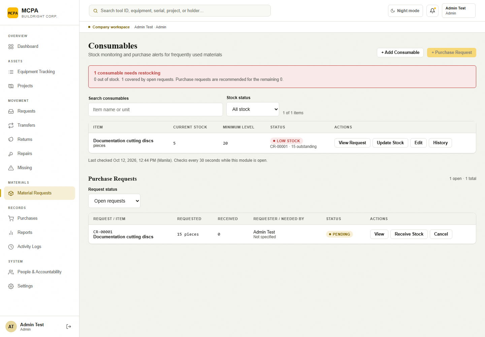
Purchases is a record-only ledger for Admin and Secretary. It records supplier, Invoice / Reference, purchase date, one optional Material Request, purchased item descriptions/quantities/prices, optional receipt and notes. Amounts display in PHP. Purchase history preserves prior and new values. Saving a purchase does not receive stock, approve a request or create equipment.
Delivery status follows the linked consumable request. Use View to see items and Purchase history; Open Material Requests goes to the stock receipt workflow. Open private receipt is available only when a receipt is attached. PDF, JPEG, PNG and WebP receipts may be up to 10 MB; an authorized link lasts five minutes. There is no purchase delete or ledger-export control.
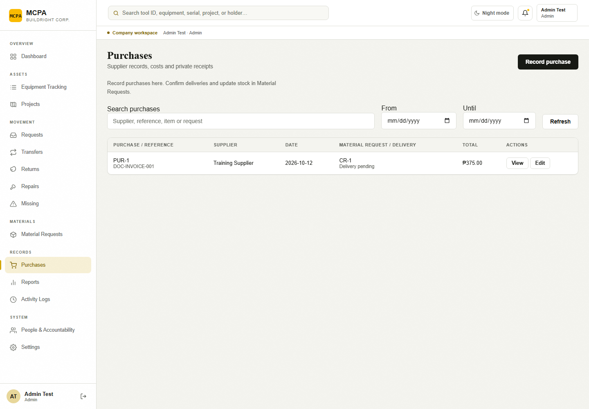
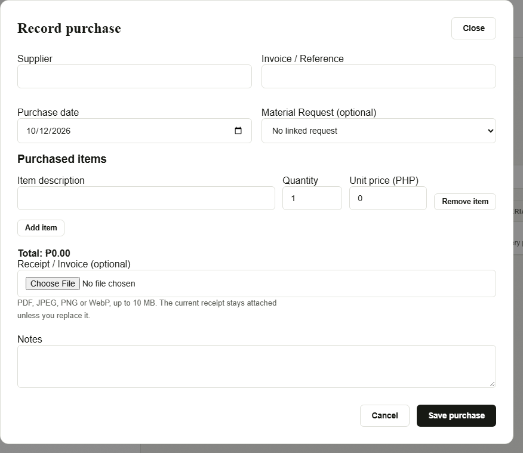
Source evidence: 1-admin/modules/consumables/consumables.js and setup.sql; 1-admin/modules/purchases/purchases.js; migrations 202610100005_purchase_ledger.sql and 202610100003_feature_storage.sql.
Reports opens Inventory monitoring, with Current inventory, Saved inventory snapshot and Movement history. Current inventory reflects now; selecting past From/Until dates does not turn it into historical inventory. Saved snapshots record real observation times and are not reconstructed for earlier dates. Movement history filters actual saved events. Export CSV downloads the selected non-empty report.
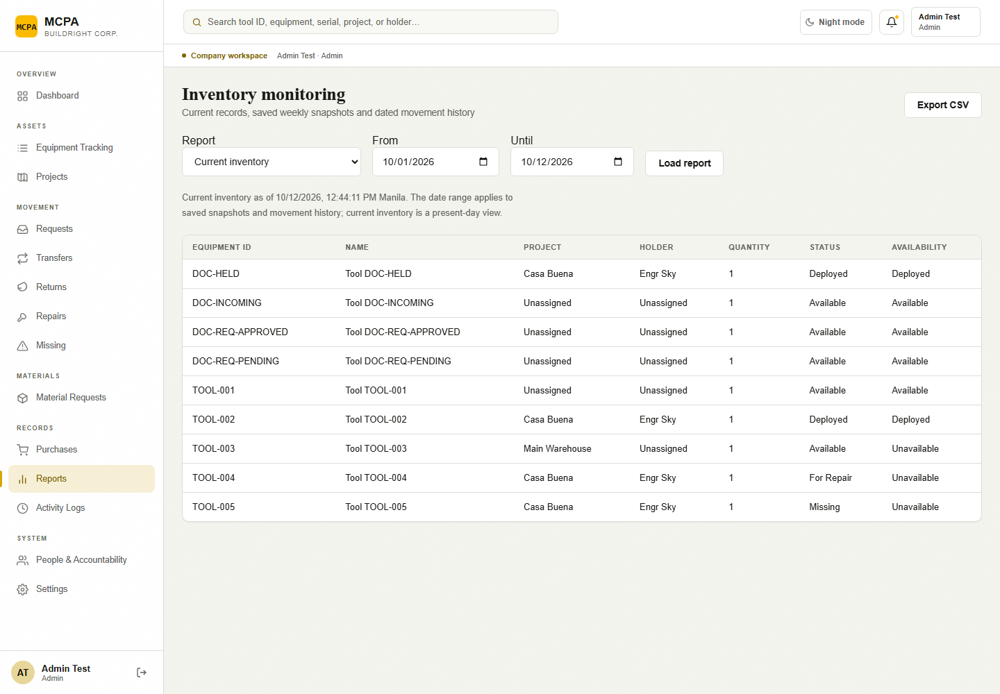
Activity Logs lists saved movement action, reference, actor, timestamp, tool IDs and summary. Search activity filters the visible authorized history. A reference link opens the exact transaction when available. Export CSV downloads the authorized movement activity; this is not a combined audit of accounts, project edits, purchases and consumable stock.
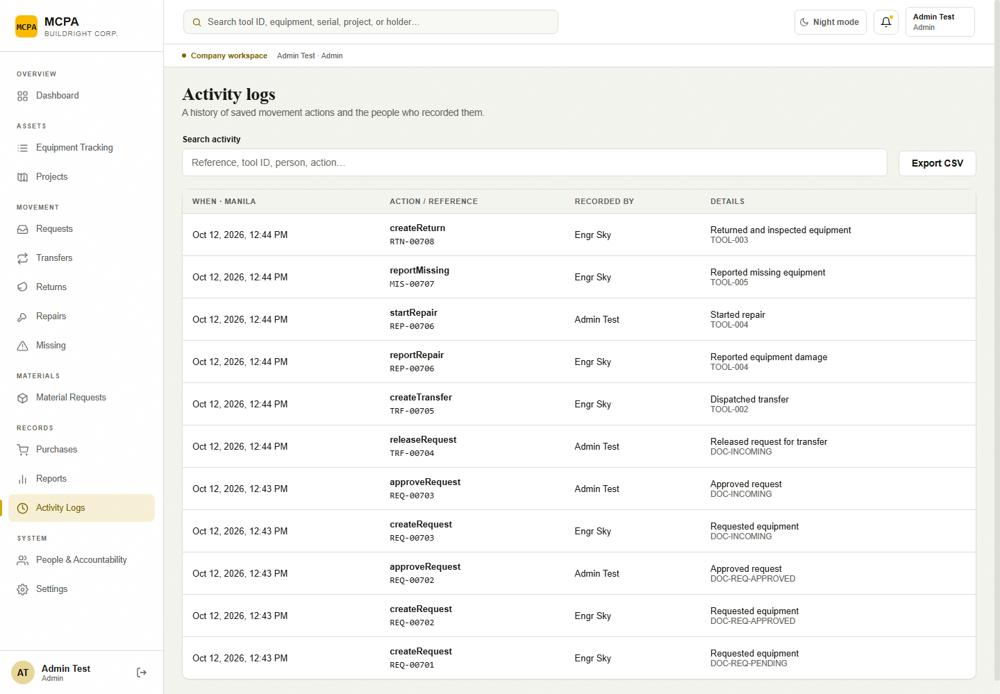
The bell opens recipient-specific Notifications and a Currently overdue list. Open and mark read changes only the selected notice’s read state and opens its authorized target. Overdue notices concern received requests with a needed-until date whose accepted equipment is still held under that request’s latest receipt. Weekly equipment review and inventory capture target Monday at or after 16:00 Asia/Manila, but require a trusted backend scheduler. In-app notices are implemented; no operational SMS, push or scheduled report email was confirmed.
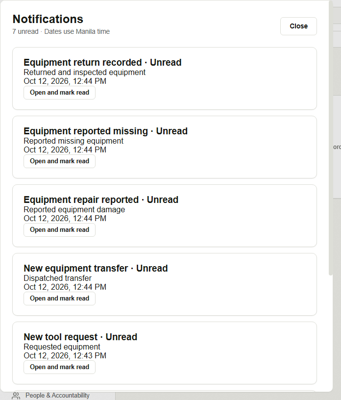
Source evidence: js/monitoring.js; 1-admin/modules/reports/reports.js; js/movement-overview.js; supabase/migrations/202610100006_monitoring.sql.
People & Accountability is restricted to Admin. Find a person searches name, email or role. Rows show Person, Email, Role, Status, Account and Actions. Invite User creates or links a non-Admin company account through the manage-accounts Edge Function when invitations are enabled. Edit access changes role/status, while preserving person identity and accountability history.
Advanced / Recovery Account Linking links a verified existing Auth identity to a company person. Existing Auth links cannot be reassigned through this form. Account access history loads recent changes. No account deletion or general personal-profile editing interface is implemented. Admin creation is not offered through Invite User; Edit access can retain an existing Admin, but a non-Admin row has no Admin promotion option.
Development / Testing Only appears only when that capability is enabled. It can create Engineer/Architect test accounts without email. These are real logins with access to live company records; the feature is not the browser-only offline demo. It was disabled in the screenshot environment.
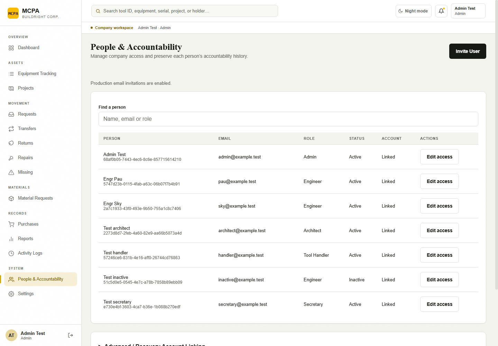
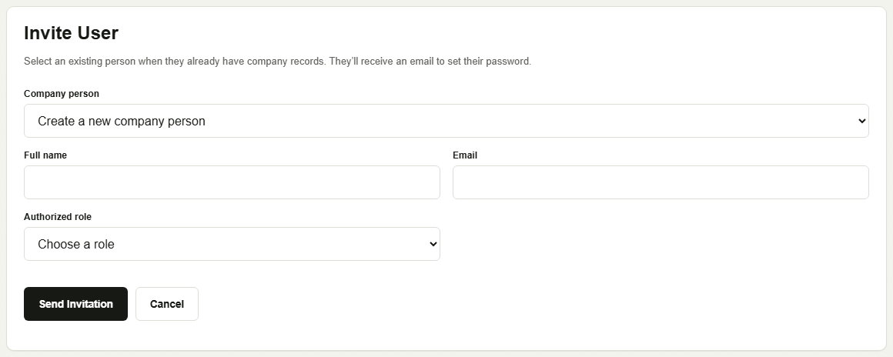
Source evidence: 1-admin/modules/users/users.js; 1-admin/modules/settings/settings.js; migrations 202610060001_account_management.sql and 202610060003_development_accounts.sql; supabase/functions/manage-accounts/handler.mjs.
The following procedures describe source-supported company operations. They were inspected and cross-checked against the genuine local UI; the capture browser did not execute their writes. Confirm the physical facts and current record state before using them in an authorized workspace.
Check a tool’s identifying data and current status.
Admin; Equipment Tracking must load.
The correct asset profile is displayed without changing equipment.
The profile’s registration-only Movement History is not a full transaction history. Equipment with positive quantity may still be reserved or unusable.
Register new equipment metadata.
Active Admin; required equipment table policies and private Storage for a photo.
A generated T- asset ID identifies the new item, registered with AVAILABLE status and no holder/project. The list refreshes.
Initial Condition is metadata; choosing Damaged does not create a repair transaction or automatically change AVAILABLE status. Review usability before issue. Photos require Storage configuration. A failure keeps the form/photo; a verified save followed by refresh failure requires checking the saved asset before retry.
Correct identification without bypassing custody.
Admin; an existing asset.
The same asset ID remains; the selected metadata and optional photo are saved.
The editor does not change current_holder_id, site_id or status. No delete/remove-current-photo operation is provided. Quantity/type edits affect totals; verify the physical record and prefer traceable movement procedures for custody changes.
Produce a physical identification or review document.
Admin; printer/Save as PDF support, popups allowed; external QR service for a tag.
A printable filtered receipt or equipment-identification tag is produced.
Inventory Export is print output, not CSV. The print receipt’s footer currently says Fieldmark Asset Management System. QR images need api.qrserver.com; blocked images can prevent tag printing. QR image retrieval was unavailable in the capture session.
Maintain project metadata and the accountable profile.
Admin; existing accessible Engineer/Architect profile; Projects database dependencies.
The project is created/updated and installed audit triggers record metadata changes.
Duplicate names, blank required text, an inaccessible profile, invalid percentage or future check date are refused. A concurrent edit requires closing/reopening the form. Project assignment does not transfer existing equipment custody.
Control visibility while preserving accountability.
Admin; a saved project.
The project’s active flag changes and its history remains.
Archiving does not return or transfer equipment. New receiving QR/direct transfers require active receiving projects. Existing inventory must still be reviewed.
Inspect assignments and supporting evidence.
Admin; readable project/equipment/history records.
Read-only views show the selected project’s equipment and available history.
Review Assigned Tools cannot reassign equipment. Missing project_history is a configuration issue, not an invitation to reconstruct or edit old history.
Review the need and allocate eligible stock.
Admin; Pending review request and still-available, unheld, unreserved equipment.
Approval changes the request to Approved and reserves the whole selected records. Rejection changes it to Rejected without custody assignment.
Approval is not a receipt. Competing approvals may fail if stock became reserved. The request cannot be silently edited or reallocated to different tools in this dialog.
Create a recorded handover for approved stock.
Admin; Approved request with intact reservations and an active operational receiver.
The request becomes Released and a pending transfer reserves the tools for receipt.
Release leaves current custody unchanged. Admin does not confirm the receiver’s testing. Cancellations after release belong to eligible field users and preserve history.
Track handover completion and condition evidence.
Admin; Transfers access.
The actual saved handover state is understood; no custody changes occur from monitoring.
Admin has no receive/refuse/cancel/reopen controls. Do not use inventory edits to simulate a completed handover. Accepted damage may complete the transfer while opening a repair case.
Verify return records and route damage/loss follow-up.
Admin; a saved return.
The saved return and generated follow-up cases can be reviewed.
There is no Admin acceptance button or separate pending-return status. A damaged return retains its holder; a missing item retains source custody/location until resolution.
Move a reported case through repair and restore service.
Admin; Reported case for start, Under repair case for completion.
The case becomes Completed; the tool status becomes Available, the holder is cleared and the selected destination is recorded.
Start repair changes the report state; the raw equipment status may remain REPAIR. The destination-based availability caption may still say Unavailable for Available equipment at a project. Changed/closed cases require refresh.
Restore a found tool with an inspected condition.
Admin; Missing case and physically inspected recovered equipment.
The missing case becomes Recovered, holder is cleared, destination is recorded, and status becomes Available or For repair. Damaged recovery opens a repair case.
Recovery does not prove who caused the loss/damage. An already changed equipment status or closed case is rejected.
Set material identity and minimum stock.
Admin or Secretary; Material Requests access.
The material appears with its opening-stock history and computed stock status.
Unit is read-only during edit. Current quantity changes belong in Update Stock or Receive Stock. Duplicate normalized names and invalid quantities are refused.
Keep consumable stock and history accurate.
Admin or Secretary; existing item and a physical quantity/reference.
Usage subtracts; restock adds; correction sets the stated total. A stock movement records the reason and resulting balance.
Usage cannot exceed current stock. Use Receive Stock for deliveries belonging to an open request; recording the same delivery here and there would double-count it. Quantity changes are version checked.
Record material stock required from purchasing.
Admin or Secretary; consumable without a Pending/Partially Received request.
A Pending purchase request is saved; available stock stays unchanged.
Requested by is entered text rather than proof of a field account. There is no approval/rejection step. One open request per consumable is enforced.
Update stock from actual deliveries and preserve purchasing history.
Admin or Secretary; Pending or Partially Received purchase request.
Received stock increases immediately. The request becomes Partially Received or Received. Cancellation closes the outstanding amount and retains earlier receipts.
Cancellation does not reverse stock already received. Saved receipts with a list-refresh failure must be checked before re-entry.
Reconcile stock against supporting records.
Admin or Secretary; existing material.
The saved stock movements explain the balance.
The interface does not offer a stock-history export/delete/edit control. Use explicit future correction entries for verified count changes.
Store an invoice record independently of physical receipt.
Admin or Secretary; configured purchase ledger; private receipt Storage if attaching a file.
The purchase and append-only history are saved. Linked delivery status follows the consumable request.
Saving never increases stock. A duplicate supplier/reference/date is refused. A changed purchase requires reopening before save. The current receipt is retained unless replaced.
Inspect purchase evidence and continue to materials receipt.
Admin or Secretary; readable purchase and attached receipt where applicable.
The ledger evidence is displayed and any delivery is recorded in the correct stock workflow.
An attachment is not proof of delivery. Private receipt URLs expire after five minutes. Ledger deletion/export and receipt removal without replacement are not offered.
Review present inventory or saved historical observations.
Admin; monitoring report RPC and actual snapshots if requesting history.
The chosen report is displayed/exported with the documented scope.
Current inventory always describes now; date filters apply to snapshots/history. Empty periods cannot be exported. No prior snapshot is invented when historical captures are absent.
Follow recorded actions to their supporting transactions.
Admin; Activity Logs and configured monitoring.
Movement links resolve to records; selected notice read state persists when the server confirms it.
Activity Logs does not include all module-specific audits. Scheduled weekly/overdue notices depend on a backend scheduler. Opening the bell alone does not mark every notice read.
Issue access while preserving a person’s existing history.
Admin; manage-accounts Edge Function deployed; email invitations enabled.
The service creates/links the intended account and the page shows the invitation state.
Invitation controls are disabled when delivery is not configured or capabilities are unavailable. Reuse the original prepared request; do not create duplicate people. Admin accounts cannot be invited through this interface.
Maintain access without replacing accountability identities.
Admin; verified company person and account linkage.
Role/status or verified linkage is saved while custody/history stay attached to the person.
An Active account must have a valid Auth linkage. Existing links cannot be reassigned. The server prevents removal of your own Admin access. Non-Admin rows do not provide an Admin promotion option. No account deletion is supported.
Create a controlled test login when email-based onboarding is unavailable.
Admin; explicitly enabled Development / Testing Only capability; approved isolated/staging use.
A real test Auth login is created without sending email; repeated completed creation retains its original account/password.
These accounts can access company records. They are not offline demo identities. Do not create test accounts in production merely to obtain screenshots. This procedure was not run during documentation.
Source evidence: Procedures 4.1–4.25 follow the module handlers cited in Chapter 3, js/permissions.js, and the authenticated, identity, account-management, portal, cancellation, ledger and monitoring migrations.
| Message / symptom | Action |
|---|---|
| Incorrect email or password. | Re-enter the issued email and password. Use Forgot password? with a valid email if needed. |
| Inactive / unauthorized profile | Contact Admin to verify account status and Auth linkage. A successful Auth login alone does not grant application access. |
| Access restricted | Use Return to your workspace. Changing the URL does not provide a missing permission. |
| Unable to load this screen | Use Retry after checking the connection. A module download failure is different from a database configuration failure. |
| Saved successfully, but the updated records could not load. | Refresh and check the original reference before any new submission. The save may already have committed. |
| Unable to sync changes. Retrying automatically… | The active page retries on focus, reconnect and roughly every 30 seconds while visible. Keep drafts and compare refreshed records before acting. |
| This record is unavailable or your account no longer has access. | Refresh the activity list. The record may have changed or be outside your role/ownership scope. |
| Projects needs a database configuration update. | Report the message to the system maintainer. Repository deployment notes identify project_history as a required dependency. Do not rerun legacy setup scripts as an end-user workaround. |
| Movement storage is not configured. | Ask the system maintainer to verify the current authenticated movement installation; refresh after configuration is completed. |
| A tool is reserved by an approved request or pending transfer. | Open the owning request/transfer and coordinate with the eligible field user. Do not clear assignments manually. |
| Purchase setup / Monitoring setup is not installed. | Report the configuration message and module. A visible menu does not establish that its deployed database functions exist. |
| Production email invitations are not yet configured. | Invitation buttons remain disabled until authorized deployment/configuration is completed. Development test accounts are a separate capability. |
| Photo or private receipt could not load/upload | Check permitted format/size, network, Storage access and popup permissions. Confirm the intended asset/purchase before retrying. |
| Unexpected Available / Unavailable display | Read both status and location availability; inspect reservations/holder and eligibility. The helper is not a complete issue-readiness check. |
| Counts differ from the number of rows | Dashboard/project totals sum quantities, zero-quantity records may be hidden, and inventory previews show only six rows. |
| No saved historical snapshots | Historical capture begins prospectively. Ask the maintainer to verify scheduler installation; use actual movement history without inferring past inventory. |
Clarify the custody boundary.
Admin.
No. Only the named receiving Engineer/Architect has receiveTransfer and the inspection form. Admin monitors the saved receipt.
A legacy backend error string mentioning Admin is not the current permission gateway.
Can Admin cancel a reservation or refused handover? No. The current cancellation migration restricts these actions to eligible accountable Engineer/Architect accounts. Admin approval/rejection/release remains supported.
Does a purchase change stock? No. Record the actual delivery in Material Requests > Receive Stock. Does a consumable Purchase Request need approval? No separate approval stage is implemented.
Does archiving a project return its equipment? No. Archiving changes project visibility/active state while retaining inventory and history.
Can I edit a historical transaction? No historical editor is provided. Use an authorized follow-up action, new request or future stock correction and preserve the original record.
| Term | Meaning |
|---|---|
| Accountable profile | Permanent company person record linked to an Auth login. Custody and history remain attached to this identity. |
| Active account | Authorized profile whose account_status is active and whose Auth linkage is valid. |
| Asset record | One inventory record identified by an asset ID. It may represent one item or an entire bulk quantity. |
| Availability | Location/state-derived caption; separate from movement eligibility and equipment condition. |
| Custody / holder | The person recorded as accountable for the equipment. Pending dispatch does not change the holder. |
| Destination project | Existing project selected for a request, transfer, return or resolution. |
| Receiving QR | A short-lived receiver-and-project reference generated before dispatch; valid for 15 minutes and revocable. It never confirms receipt. |
| Handover code / QR | The transfer reference shared after dispatch, for example TRF-00705. It opens the saved transfer for inspection. |
| Equipment tag | An asset ID QR tag used to identify equipment. It does not grant custody or override named-recipient rules. |
| Reservation | Allocation of the whole selected asset record to an approved request or pending/refused transfer. |
| Inspection | Per-tool condition, notes when needed, testing confirmation for received non-missing items, and a custody decision for damaged items. |
| REQ / TRF / RTN / REP / MIS | Equipment request, transfer, return, repair and missing-report reference prefixes. Numbering comes from a shared sequence; gaps are normal. |
| CR / PUR | Consumable purchase request and record-only purchase ledger reference prefixes. These are different from equipment requests. |
| RPC | Database function called by the application. It validates the authenticated role, current state and ownership. |
| RLS | Row-level security: database rules restricting which records an authenticated account may read or change. |
| Snapshot | An observation of inventory saved at an actual capture time. It does not reconstruct earlier inventory. |
| Offline demonstration | Explicit browser-only workspace with sample identities and records, separate from live company data. |
The companion system review contains the five-role permission matrix, module inventory, implementation gaps, source references and capture manifest. Source and screenshot hashes were checked against the completed artifacts. The captured states demonstrate role-correct rendering; they do not certify production deployment or execute all write procedures.
| Version | Date | Revision |
|---|---|---|
| 1.0 | 12 October 2026 | Initial source-based Administrator manual; genuine isolated screenshots; deployment and hardware limits identified. |
Future revision: repeat source/permission review after any workflow, label, migration or role change. Replace the corresponding figures using dedicated staging accounts and approved records. Do not reuse production transactions merely to illustrate a procedure.